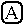
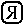
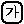
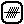
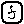
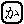
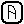

Unicode Technical Report #36
Unicode Security Considerations
Summary
Because Unicode contains such a large number of characters and incorporates the
varied writing systems of the world, incorrect usage can expose programs or systems to possible
security attacks. This document describes some of the security considerations that programmers,
system analysts, standards developers, and users should take into account, and provides
specific recommendations to reduce the risk of problems.
Status
This document has been reviewed by Unicode members and other interested parties, and has
been approved for publication by the Unicode Consortium. This is a stable document and may be
used as reference material or cited as a normative reference by other specifications.
A Unicode Technical Report (UTR) contains informative material. Conformance to
the Unicode Standard does not imply conformance to any UTR. Other specifications, however, are
free to make normative references to a UTR.
Please submit corrigenda and other comments with the online reporting form [Feedback].
Related information that is useful in understanding this document is found in
References. For the latest version of the Unicode Standard see [Unicode].
For a list of current Unicode Technical Reports see [Reports]. For more
information about versions of the Unicode Standard, see [Versions].
The intent for this document is to become a Unicode Technical Standard. However,
because of the current needs for referenceable initial recommendations and data, this document
is being released first as a Unicode Technical Report. To allow access to the most recent work
of the Unicode security subcommittee on this document, the "Latest Working Draft"
link in the header points to the latest working-draft document under development.
Contents
1. Introduction
The Unicode Standard represents a very significant advance over all previous methods of
encoding characters. For the first time, all of the world's characters can be represented in a
uniform manner, making it feasible for the vast majority of programs to be globalized:
built to handle any language in the world.
In many ways, the use of Unicode makes programs much more robust and secure. When systems
used a hodge-podge of different charsets for representing characters, there were security and
corruption problems that resulted from differences between those charsets, or from the way in
which programs converted to and from them.
But because Unicode contains such a large number of characters, and because it incorporates
the varied writing systems of the world, incorrect usage can expose programs or systems to
possible security attacks. This document describes some of the security considerations that
programmers, system analysts, standards developers, and users should take into account.
For example, consider visual spoofing, where a similarity in visual appearance fools a user
and causes him or her to take unsafe actions.
Suppose that the user gets an email notification about an apparent problem in their
citibank account. Security-savvy users realize that it might be a spoof; the HTML email might
be presenting the URL http://citibank.com/... visually, but might be hiding the real
URL. They realize that even what shows up in the status bar might be a lie, since clever
Javascript or ActiveX can work around that. (And users may have these turned on unless they
know to turn them off.) They click on the link, and carefully examine the browser's address
box to make sure that it is actually going to http://citibank.com/.... They see that it
is, and use their password. But what they saw was wrong —
it is actually going to a spoof site with a fake "citibank.com", using the Cyrillic letter
that looks precisely like a 'c'. They use the site without suspecting, and the password ends
up compromised.
This problem is not new to Unicode: it was possible to spoof even with ASCII characters
alone. For example, "inteI.com" uses a capital I instead of an L.
The infamous example here involves "paypaI.com":
... Not only was "Paypai.com" very convincing, but the scam artist even
goes one step further. He or she is apparently emailing PayPal customers, saying they have a
large payment waiting for them in their account.
The message then offers up a link, urging the recipient to claim the
funds. But the URL that is displayed for the unwitting victim uses a capital "i" (I), which
looks just like a lowercase "L" (l), in many computer fonts. ...
—
Beware the 'PaypaI'
scam
While some browsers prevent this spoof by lowercasing domain names, others do not.
Thus to a certain extent, the new forms of visual spoofing available with Unicode are a
matter of degree and not kind. However, because of the very large number of Unicode characters
(over 96,000 in the current version), the number of opportunities for visual spoofing is
significantly larger than with a restricted character set such as ASCII.
This document should grow over time, adding additional sections as needed. Initially, it is
organized into two sections: visual security issues and non-visual security issues. For more
information, see also the Unicode FAQ on Security Issues [FAQSec].
Each section presents background information on the kinds of problems that can occur,
then lists specific recommendations for reducing the risk of such problems.
Note: Some of the examples below use Unicode characters which some browsers will not
show, or may not show in a way that illustrates the problem. For more information about
improving the display in your browser, see [Display].
For examples and background information, see the References,
including the Related Material. For information on possible
future topics, see Appendix E. Future Topics.
2. Visual Security Issues
Visual spoofs depend on the use of visually confusable strings: two different
strings of Unicode characters whose appearance in common fonts in small sizes at screen
resolutions is sufficiently close that people easily mistake one for the other.
There are no hard-and-fast rules for visual confusability: many characters look like
others when used with sufficiently small sizes. "Small-sizes at screen resolutions", means fonts
whose ascent + descent is from 9 to 12 pixels for most scripts, somewhat larger for scripts,
such as Japanese, where the users typically select larger sizes. Confusability also depends on
the style of the font: with a traditional Hebrew style, many characters are only distinguishable
by fine differences which may be lost at small sizes. In some cases sequences of characters can
be used to spoof: for example, "rn" ("r" followed by "n") is visually confusable with "m" in
many sans-serif fonts.
Where two different strings can always be represented by the same sequence of glyphs,
those strings are called homographs. For example, "AB" in Latin and "AB" in Greek are
homographs. Spoofing is not dependent on just homographs; if the visual appearance is close
enough at small sizes or in the most common fonts, that can be sufficient to cause problems.
Note that some people use the term homograph broadly, encompassing all visually
confusable strings.
Two characters with similar or identical glyph shapes are not visually confusable if
the positioning of the respective shapes is sufficiently different. For example, foo·com
(using the hyphenation point instead of the period) should be distinguishable from foo.com by
the positioning of the dot (except in faulty fonts).
It is important to be aware that identifiers are special-purpose strings used for
identification, strings that are deliberately limited to particular repertoires for that
purpose. Exclusion of characters from identifiers does not at all affect the general use of
those characters, such as within documents.
The remainder of this section is concerned with identifiers that can be confused by ordinary
users at typical sizes and screen resolutions. For examples of visually confusable characters,
see Appendix B. Confusable Detection.
2.1 Internationalized Domain Names
Visual spoofing is an especially important subject given the recent introduction of
Internationalized Domain Names (IDN). There is a natural desire for people to see domain names
in their own languages and writing systems; English speakers can understand this if they
consider what it would be like if they always had to type web addresses with Japanese
characters. So IDN represents a very significant advance for most people in the world. However,
the larger repertoire of characters results in more opportunities for spoofing. Proper
implementation in browsers and other programs is required to minimize security risks while
still allowing for effective use of non-ASCII characters.
Internationalized Domain Names are, of course, not the only cases where visual spoofing can
occur. For example, a message offering to install software from "IBM", authenticated with a
certificate in which the "М" character
happens to be the Russian (Cyrillic) character that looks precisely like the English "M".
Any place where strings are used as identifiers is subject to this kind of spoofing.
IDN provides a good starting point for a discussion of visual spoofing, and will be used as
the focus for the remaining part of this section. However, the concepts and recommendations
discussed here can be generalized to the use of other types of identifiers. For background
information on identifiers, see UAX #31: Identifier and Pattern Syntax [UAX31].
Certain parts of domain names are still required to be in ASCII, and thus not subject
to the visual spoofing issues discussed here. For example, the top-level domain names (.com, .ru,
etc.) are currently always ASCII (this may change in the future, however).
Fortunately the design of IDN prevents a huge number of spoofing attacks. All conformant
users of IDN are required to process domain names to convert what are called
compatibility-equivalent
characters into a unique form using a process called compatibility normalization (NFKC) —
for more information on this, see [UAX15]. This processing
eliminates most of the possibilities for visual spoofing by mapping away a large number of
visually confusable characters and sequences. For example, characters like the half-width
Japanese katakana character ｶ
are converted to the regular character カ, and single ligature characters like
"fi" to the sequence of regular characters "fi".
Unicode contains the "ä"
(a-umlaut) character, but also contains a free-standing umlaut ("
̈") which can be used in combination with any character, including an "a". But the
compatibility normalization will convert any sequence of "a" plus "
̈" into the regular "ä".
Thus you can not spoof an a-umlaut with a + umlaut; it simply results in the
same domain name. See the example Safe Domain Names below. The String column shows the
actual characters; the UTF-16 shows the underlying encoding, while the ACE ("ASCII
Compatible Encoding") column shows the internal format of the domain name. This is the result of
applying the ToASCII() operation [RFC3490] to the original IDN, which is
the way this IDN is stored and queried in the DNS (Domain Name System).
Safe Domain Names
| |
String |
UTF-16 |
ACE |
Comments |
| 1a |
ät.com |
0061 0308 0074 002E 0063
006F 006D |
xn--t-zfa.com |
Uses the decomposed form, a + umlaut |
| 1b |
ät.com |
00E4 0074 002E 0063 006F
006D |
xn--t-zfa.com |
But it ends up being identical to the composed form, in IDNA |
Note: The ICU demo at [IDN-Demo] can be used to
demonstrate the results of processing different domain names. That demo was also used to get
the ACE values shown here.
Similarly, for most scripts, two accents that do
not interact typographically are put into a determinate order when the text is normalized.
Thus the sequence <x, dot_above, dot_below> is reordered as <x, dot_below, dot_above>. This
ensures that the two sequences that look identical (ẋ̣ and ẋ̣̇) have the same
representation.
The IDN processing also removes case distinctions by performing a case folding
to reduce characters to a lowercase form. This is also useful for avoiding spoofing
problems, since characters are generally more distinctive in their lowercase forms. That means
that people can focus on just the lowercase characters.
This focus on lowercase letters only really helps for Internationalized Domain
Names, because of two factors: First, the IDNA operation ToASCII() will map to lowercase if
and only if the label contains some non-ASCII character. Thus ToASCII("paypaI.com") (where the
'I' is a capital 'i') produces no change.
Secondly, domain names are case-insensitive, but [RFC1034] and
[RFC1035], as clarified by [DNS-Case],
introduce the concept of case preservation. Thus if someone queries the DNS for "paypaI.com",
and the DNS contains information for "paypai.com", that information is delivered, but the
answer from the DNS will be the original "paypaI.com".
For a list of allowable characters in IDN, see [idnhtml]. There
are many misperceptions about which characters are allowed in IDN, so referencing this explicit
list should help dispel some of them.
Note: Users expect diacritical marks to distinguish domain names. For example,
the domain names "resume.com" and "résumé.com" are (and should be) distinguished. In languages
where the spelling may allow certain words with and without diacritics, registrant
would have to register two or more domain names so as to cover user expectations (just
as one may register both "analyze.com" and "analyse.com" to cover variant spellings).
Although normalization and case-folding prevent many possible spoofing attacks,
visual spoofing can still occur with many Internationalized Domain Names. This poses the
question of which parts of the infrastructure using and supporting domain names are best suited
to minimize possible spoofing attacks.
Some of the problems of visual spoofing can be best handled on the registry side, while
others can be best handled on the user agent side (browsers, emailers, and other programs
that display and process URLs). The registry has the most data available about alternative
registered names, and can process that information the most efficiently at the time of
registration, using policies to reduce visual spoofing. For example, given the method described
in Appendix B. Confusable Detection,
the registry can easily determine if a proposed registration could be visually confused with an
existing one; that determination is much more difficult for user agents because of the sheer
number of combinations that they would have to check.
However, there are certain issues much more easily addressed by the user agent:
- the user agent has more control over the display of characters, which is crucial to
spoofing
- there are legitimate cases of visually confusable characters that one may want to
allow after alerting the user, such as single-script confusables discussed below.
- one cannot depend on all registries being equally responsive to security issues
- due to the decentralized nature of DNS, registries do not control subdomains being
established beyond the domain name registered
Thus the problem of visual spoofing is most effectively addressed by a combination of
strategies involving user-agents and registries.
Visually confusable characters are not usually unified across scripts. Thus a Greek
omicron is encoded as a different character from the Latin "o", even though it is usually
identical or nearly identical in appearance. There are good reasons for this:
often the characters were separate in legacy encodings, and preservation of those distinctions
was necessary for existing data to be mapped to Unicode without loss. Moreover, the characters
generally have very different behavior: two visually confusable characters may be different in
casing behavior, in category (letter versus number), or in numeric value. After all, ASCII does
not unify lowercase letter l and digit 1, even though those are visually confusable. (Many
fonts always distinguish them, but many do not.) Encoding the Cyrillic character б
(corresponding to the letter "b") by using the numeral 6, would clearly have been a mistake,
even though they are visually confusable.
However, the existence of visually confusable characters across scripts
leads to a significant number of spoofing possibilities using characters from different
scripts. For example, a domain name can be spoofed by using a Greek omicron instead of an 'o',
as in example 1a in the following table.
Mixed-Script Spoofing
| |
String |
UTF-16 |
ACE |
Comments |
| 1a |
tοp.com |
0074 03BF 0070
002E 0063 006F 006D |
xn--tp-jbc.com |
Uses a Greek omicron in place of the o |
| 1b |
tοp.com |
0074 006F 0070
002E 0063 006F 006D |
top.com |
|
There are many legitimate uses of mixed scripts. For example, it is quite common
to mix English words (with Latin characters) in other languages, including languages using
non-Latin scripts. For example, one could have XML-документы.com (which would be a site
for "XML documents" in Russian). Even in English, legitimate product or organization names may
contain non-Latin characters, such as Ωmega, Teχ, Toys-Я-Us, or HλLF-LIFE. The lack of IDNs in
the past has also led to the usage in some registries (such as the .ru top-level domain) where
Latin characters have been used to create pseudo-Cyrillic names in the .ru (Russian) top-level
domain. For example, see http://caxap.ru/ (сахар means sugar in Russian).
For information on detecting mixed scripts, see Appendix D.
Mixed Script Detection.
Cyrillic, Latin, and Greek represent special challenges, since the number of common
glyphs shared between them is so high, as can be seen from Appendix B.
Confusable Detection. It may be possible to
compose an entire domain name (except the top-level domain) in Cyrillic using letters that will
be essentially always identical in form to Latin letters, such as "scope.com": with "scope" in
Cyrillic looking just like "scope" in Latin. Such spoofs are called whole-script spoofs,
and the strings that cause the problem are correspondingly called whole-script
confusables.
Spoofing with characters entirely within one script, or using characters that are common
across scripts (such as numbers), is called single-script spoofing, and the strings that
cause it are correspondingly called single-script confusables. While compatibility
normalization and mixed-script detection can handle the majority of cases, they do not handle
single-script confusables. Especially at the smaller font sizes in the context of an address
bar, any visual confusables within a single script can be used in spoofing. Importantly, these
problems can be illustrated with common, widely available fonts on widely available operating
systems — the problems are not specific to any single vendor.
Consider the following examples, all in the same script. In each numbered case, the strings
will look identical or close to identical in most browsers
Single-Script Spoofing
| |
String |
UTF-16 |
ACE |
Comments |
| 1a |
a‐b.com |
0061 2010 0062
002E 0063 006F 006D |
xn--ab-v1t.com |
Uses a real hyphen, instead of the ASCII hyphen-minus |
| 1b |
a-b.com |
0061 002D 0062
002E 0063 006F 006D |
a-b.com |
|
| |
| 2a |
so̷s.com |
0073 006F 0337
0073 002E 0063 006F 006D |
xn--sos-rjc.com |
Uses o + combining slash |
| 2b |
søs.com |
0073 00F8 0073
002E 0063 006F 006D |
xn--ss-lka.com |
|
| |
| 3a |
z̵o.com |
007A 0335 006F 002E 0063 006F 006D |
xn--zo-pyb.com |
Uses z + combining bar |
| 3b |
ƶo.com |
01B6 006F 002E 0063 006F 006D |
xn--o-zra.com |
|
| |
| 4a |
an͂o.com |
0061 006E 0342
006F 002E 0063 006F 006D |
xn--ano-0kc.com |
Uses n + greek perispomeni |
| 4b |
año.com |
0061 00F1 006F
002E 0063 006F 006D |
xn--ao-zja.com |
|
| |
| 5a |
ʣe.org |
02A3 0065 002E 006F 0072 0067 |
xn--e-j5a.org |
Uses d-z digraph |
| 5b |
dze.org |
0064 007A 0065 002E 006F 0072 0067 |
dze.org |
|
Examples exist in various scripts. For instance, 'rn' was already mentioned above, and the
sequence अ +
ा typically looks identical to
आ.
As mentioned above, in most cases two sequences of accents that have the same
visual appearance are put into a canonical order. This does not happen, however, for certain
scripts used in Southeast Asia, so reordering characters may be used for spoofs in those cases.
Example:
Combining Mark Order Spoofing
| |
String |
UTF-16 |
ACE |
Comments |
| 1a |
လို.com |
101C 102D 102F |
xn--gjd8ag.com |
Reorders two combining marks |
| 1b |
လုိ.com |
101C 102F 102D |
xn--gjd8af.com |
|
An additional problem arises when a font or rendering engine has inadequate support for
certain sequences of characters. These are characters or sequences of characters that should be
visually distinguishable, but do not appear that way. Examples 1a and 1b show the cases of
lowercase L and digit one, mentioned above. While this depends on the font, on the computer used
to write this document, in roughly 30% of the fonts the glyphs are essentially identical. In
example 2a, the a-umlaut is followed by another umlaut. The Unicode Standard
guidelines indicate that the second umlaut should be 'stacked' above the first, producing
a distinct visual difference. But as this example shows, common fonts will simply superimpose
the second umlaut; and if the positioning is close enough, the user will not see a
difference between 2a and 2b.
Inadequate Rendering Support
| |
String |
UTF-16 |
ACE |
Comments |
| 1a |
al.com |
0061 006C 002E
0063 006F 006D |
al.com |
1 and l may appear alike, depending on font. |
| 1b |
a1.com |
0061 0031 002E
0063 006F 006D |
a1.com |
|
| |
| 2a |
ä̈t.com |
00E4 0308 0074 002E 0063 006F 006D |
xn--t-zfa85n.com |
a-umlaut + umlaut |
| 2b |
ät.com |
00E4 0074 002E 0063 006F 006D |
xn--t-zfa.com |
|
| |
| 3a |
eḷ.com |
0065 006C
0323 002E 0063 006F 006D |
xn--e-zom.com |
Has a dot under the l; may appear under the e |
| 3b |
ẹl.com |
0065 0323 006C 002E 0063 006F 006D |
xn--l-ewm.com |
|
| 3c |
ẹl.com |
1EB9 006C 002E 0063 006F 006D |
xn--l-ewm.com |
|
Examples 3 a, b, and c show an even worse case. The underdot character in 3a should
appear under the 'l', but as rendered with many fonts, it appears under the 'e'. It is thus
visually confusable with 3b (where the underdot is under the e) or the equivalent
normalized form 3c.
There are a number of characters in Unicode that are invisible, although they may affect the
rendering of the characters around them. An example is the Joiner character, used to request a
cursive connection such as in Arabic. Such characters may often be in positions where they have
no visual distinction, and are thus discouraged for use in identifiers. A sequence of
ideographic description characters may be displayed as if it were a CJK character; thus they are
also discouraged.
Some characters, such as those used in the Arabic and Hebrew script, have an inherent
right-to-left writing direction. When these characters are mixed with characters of other
scripts or symbol sets which are displayed left-to-right, the resulting text is called
bidirectional (or bidi in short). The relationship between the memory representation of the text
(logical order) and the display appearance (visual order) of bidi text is governed by the
Unicode Bidirectional Algorithm [UAX9].
Because some characters have weak or neutral directionalities, as opposed to strong
left-to-right or right-to-left, the Unicode Bidirectional Algorithm uses a precise set of rules
to determine the final visual rendering. However, presented with arbitrary sequences of text,
this may lead to text sequences which may be impossible to read intelligibly, or which may be
visually confusable. To mitigate these issues, both the IDN and IRI specifications require that:
- each label of a host name must not use both right-to-left and left-to-right characters,
- a label using right-to-left character must start and end with right-to-left characters.
In addition, the IRI specification extends those requirements to other components of an IRI,
not just the host name labels. Not respecting them would result in insurmountable visual
confusion. A large part of the confusability in reading an IRI containing bidi characters is
created by the weak or neutral directionality property of many IRI/URI delimiters such as '/',
'.', '?' which makes them change directionality depending on their surrounding characters. For
example, in example #1 in the table below, the dots following each label are colored the same as
that label. Notice that the placement of that following punctuation may vary.
Bidi Examples
| |
Samples |
| 1 |
http://سلام.دائم.com
|
| 2 |
http://سلام.a.دائم.com |
Adding the left-to-right label "a" between the two
Arabic labels splits them up and reverses their display order, as seen in example #2. The IRI
specification [RFC3987] provides more examples of valid and invalid IRIs
using various mixes of bidi text.
To minimize the opportunities for confusion, it is imperative that the IDN and IRI
requirements concerning bidi processing be fully implemented in the processing of host names
containing bidi characters. Nevertheless, even when these requirements are met, reading IRIs
correctly is not trivial. Because of this, mixing right-to-left and left-to-right characters
should be done with great care when creating bidi IRIs.
Recommendations:
- As much as possible, avoid mixing right-to-left and left-to-right characters in a single
host name
- When right-to-left characters are used, limit the usage of left-to-right characters to
well-known cases such as TLD names and URI/IRI scheme names (such as http, ftp, mailto,
etc...)
- Minimize the use of digits in host names and other components of IRIs containing
right-to-left characters.
- Keep IRIs containing bidi content simple to read.
Spoofing syntax characters can be even worse than regular characters. For example,
U+2044 ( ⁄ ) FRACTION
SLASH can look like a regular ASCII '/' in many fonts
— ideally the spacing and angle are sufficiently
different to distinguish these characters. However, this is not always the case. When this
character is allowed, the URL in line 1 of the following table may appear to be in the domain
macchiato.com, but is actually in a particular subzone of the domain bad.com.
Syntax Spoofing
| |
URL |
Subzone |
Domain |
| 1 |
http://macchiato.com/x.bad.com |
macchiato.com/x |
bad.com |
| 2 |
http://macchiato.com?x.bad.com |
macchiato.com?x |
bad.com |
| 3 |
http://macchiato.com.x.bad.com |
macchiato.com.x |
bad.com |
| 4 |
http://macchiato.com#x.bad.com |
macchiato.com#x |
bad.com |
Other syntax characters, if there are visual confusables, can be similarly spoofed, as in
lines 2 through 4. Many
— but not all
— of these cases, such as U+2024 (·)
ONE DOT LEADER are disallowed by Nameprep [RFC3491].
Of course, a spoof fooling the user into thinking that the domain name is the first
part of the URL does not require internationalized domain names. For example, in the following
the real domain name, bad.com, is also obscured for the casual user, who may not realize that --
does not terminate the domain name.
http://macchiato.com--long-and-obscure-list-of-characters.bad.com?findid=12
In retrospect, it would have been much better if domain names were customarily written
with "most significant part first". The following hypothetical display would be harder to spoof:
the fact that it is "com.bad" is not as easily lost.
http://com.bad.org/x.example?findid=12
http://com.bad.org--long-and-obscure-list-of-characters.example?findid=12
But that would be an impossible change at this point: it is long past the time
when such a radical change could have been made. However, a possible solution is to always
visually distinguish the domain, for example:
http://macchiato.com
http://bad.com
http://macchiato.com/x.bad.com
http://macchiato.com--long-and-obscure-list-of-characters.bad.com?findid=12
As it turns out, some registries register at the third-level (such as http://nominet.org.uk),
and there is no rule that forbids a top-level domain to register at the fourth or even higher
level. So the user-agent needs to know which is the "core" level to distinguish for the user
— it may not be the second level.
For example, in the top-level domain .de, the second level is very important. That is the one
where security is most crucial because that is where there will be spoofs of banks, on-line
stores, etc. such as http://amazon.de. For the UK, on the other hand, the second level
domain is not very interesting from a security standpoint, since it is limited to co, me, org,
ltd, plc, net, sch, ac, gov, nhs, police, and mod (according to the Nominet site). There the
third level is the more important one; that is where someone will try to spoof http://amazon.co.uk.
User Agents already have to deal with syntax issues. For example, when given the URL
http://something@macchiato.com, Firefox gives something like the following alert:
This mechanism can be used to alert the user to cases of syntax spoofing, as described
below.
It is very important not to show a missing glyph or character with a simple "?", since
that makes every such character be visually confusable with a real question mark. Instead,
follow the Unicode guidelines for displaying missing glyphs using a rounded-rectangle, as
described in Section 5.3 Unknown and Missing Characters of [Unicode]
and listed in Appendix C. Missing Character Glyphs.
Turning away from the focus on domain names for a moment, there is another area where
visual spoofs can be used. Many scripts have sets of decimal digits that are different in shape
from the typical European digits {0}. For example, Bengali has
{০ ১
২
৩
৪ ৫
৬
৭ ৮
৯}, while Oriya has {୦
୧ ୨
୩ ୪
୫ ୬
୭ ୮
୯}. While the sets taken as a whole are different
in shape, individual digits may have the same shapes as digits from other scripts, even digits
of different values. For example, the string ৪୨
is visually confusable with 89 (at small sizes), but actually has the numeric value 42.
Where software interprets the numeric value of a string of digits without detecting that the
digits are from different scripts, it is possible to generate such spoofs.
This section lists techniques that can be used in reducing the risks of visual spoofing.
These techniques are referenced by Section 2.10
Recommendations.
Many opportunities for spoofing can be removed by using a case-folded format.
This format, defined by the Unicode Standard, produces a string that only contains lowercase
characters where possible.
However, there is one particular situation where the pure case-folded format of a
string as defined by the standard is not desired. The character U+03A3 "Σ" capital sigma
lowercases to U+03C3 "σ" small sigma if it is followed by another letter, but lowercases
to U+03C2 "ς" small final sigma if it is not. Because both σ and ς have a
case-insensitive match to Σ, and the case folding algorithm needs to map both of them together
(so that transitivity is maintained), only one of them appears in the case-folded form.
When the case-folded format of a Greek string is to be displayed to the user, it should
be processed so as to choose the proper form for the small sigma, depending on the context. The
test for the context is provided in Table 3-13 of [Unicode]. It is the
test for Final_Sigma, where C represents the character σ. Basically, when σ comes after a cased
letter, and not before a cased letter (where certain ignorable characters can come in between),
it should be transformed into ς.
Final Sigma Handling (from Table 3-13)
| Context |
Description |
Regular Expressions |
| Final_Sigma |
C is preceded by a sequence consisting of a
cased letter and a case-ignorable sequence, and C is not followed by a sequence consisting
of a case ignorable sequence and then a cased letter. |
Before C: |
\p{cased} (\p{case-ignorable})* |
| After C: |
! ( (\p{case-ignorable})* \p{cased} ) |
For more information on case mapping and folding, see the following: Section
3.13 Default Case
Operations, Section
4.2 Case Normative,
and Section 5.18 Case
Mappings of [Unicode].
There are two techniques to reduce the risk of spoofing that can usefully be applied to
identifiers: mapping and prohibition. IDNA uses both of these. A number of characters are
included in Unicode for compatibility. What is called Compatibility Normalization (NFKC)
can be used to map these characters to the regular variants (this is what is done in IDNA). For
example, a half-width Japanese katakana character
ｶ
is mapped to the regular character カ. Additional mappings can be added beyond compatibility
mappings, for example, IDNA adds the following:
200D; ZERO WIDTH JOINER maps to nothing (that is, is removed)
0041; 0061; Case maps 'A' to 'a'
20A8; 0072 0073; Additional folding, mapping ₨
to "rs"
In addition, characters may be prohibited. For example, IDNA prohibits
space and no-break space
(U+00A0). Instead, for example, of removing a ZERO WIDTH JOINER, or mapping
₨ to "rs", one could prohibit these characters. There are
pluses and minuses to both approaches. If compatibility characters are widely used in practice,
in entering text, then it is much more user-friendly to remap them. This also extends to
deletion; for example, the ZERO WIDTH JOINER is commonly used to affect the presentation of
characters in languages such as Hindi or Arabic. In this case, text copied into the address box
may often contain the character.
Where this is not the case, however, it may be advisable to simply prohibit the
character. It is unlikely, for example, that ㋕ would be
typed by a Japanese user, nor that it would need to work in copied text.
Where both mapping and prohibition are used, the mapping should be done before the
prohibition, to ensure that characters do not "sneak past". For example, the Greek character
TONOS (΄) ends up being prohibited, because it normalizes to
space + acute, and space itself is prohibited.
The Restriction Levels 1-5 are defined below for use in implementations. These
place restrictions on the use of identifiers according to the appropriate Identifier
Profile as specified in Appendix A. Identifier Characters
and the determination of script as specified in Appendix D.
Mixed Script Detection. For IDNA, the particular
Identifier Profile will be one of the two specified in Appendix A.2
IDN Security Profiles for Identifiers.
- ASCII-Only
- All characters in each identifier must be ASCII
- Highly Restrictive
- All characters in each identifier must be from a single script, or from the
combinations: Han + Hiragana + Katakana; Han + Bopomofo; or Han + Hangul
- No characters in the identifier can be outside of the Identifier Profile
- Note that this level will satisfy the vast majority of Latin-script users.
- Moderately Restrictive
- Allow Latin with other scripts except Cyrillic, Greek,
Cherokee
- Otherwise, the same as Highly Restrictive
- Minimally Restrictive
- Allow arbitrary mixtures of scripts, e.g. Ωmega, Teχ, HλLF-LIFE, Toys-Я-Us
- Otherwise, the same as Moderately Restrictive
- Unrestricted
- Any valid identifiers, including characters outside of the Identifier Profile,
e.g. I♥NY.org
An appropriate alert should be generated if a domain name fails to satisfy the
Restriction Level chosen by the user. Depending on the circumstances and the level
difference, the form of such alerts could be minimal, such as special coloring or icons
(perhaps with a tool-tip for more information); or more obvious, such as an alert dialog
describing the issue and requiring user confirmation before continuing; or even more
stringent, such as disallowing the use of the identifier. Where icons are used to
indicate the presence of characters from scripts, the glyphs in Appendix C.
Missing Character Glyphs can be used.
Appendix A. Identifier Characters provides
for two profiles of identifiers that could be used in Restriction Levels 1 through 4. The strict
profile is the recommended one. If the lenient one is also allowed, the user should have a
choice in preferences, so that there is some way to limit the levels to using the strict input
profile.
At all restriction levels, an appropriate alert should be generated if the domain name
contains a syntax character that might be used in a spoof, as described in Section 2.6
Syntax Spoofing. For example:
User-agents should remember when the user has accepted an alert, for say
Ωmega.com, and permit future access without bothering the user again. This essentially
builds up a whitelist of allowed values. This whitelist should contain the nameprepped form of
each string. When used for visually confusable detection, each element in the whitelist should
also have an associated transformed string as described in Appendix B. If a system allows upper
and lowercase forms, then both transforms should be available. The program should allow access
to editing this whitelist directly, in case the user wants to correct the values. The whitelist
may also include items know to the user agent to be 'safe'.
The set of characters in the identifier profile and the results of the confusable mappings
may be refined over time, so implementations should recognize and allow for that. Characters are
continually being added to the Unicode Standard that may be valid for identifiers. The
confusable information may add more characters as visually confusable over time.
There may also be cases where characters are no longer recommended for inclusion in
identifiers, and more information becomes available about them. Thus the identifier profile may
become more restrictive in a future version, for some characters. Of course, once identifiers
are registered they cannot be withdrawn, but new proposed identifiers that contain such
characters can be denied. A user-agent should give users a preference setting that essentially
uses the union of the old and new identifier profiles in determining the Restriction Levels.
The Unicode Consortium recommends a somewhat conservative approach at this point, because is
always easier to widen restrictions than narrow them. The Consortium is gathering data that
would allow for a finer-grained approach, and expects to refine these recommendations in the
future.
Some have proposed restricting domain names according to language, to prevent spoofing.
In practice, that is very problematic: it is very difficult to determine the intended language
of many terms, especially product or company names, which are often constructed to be neutral
regarding language. Moreover, languages tend to be quite fluid; foreign words are continually
being adopted. Except for registries with very special policies (such as the blocking used by
some East Asian registries as described in [RFC3743]), the language
association does not make too much sense.
Instead, the recommendations call for combination of string preprocessing to remove
basic equivalences, promoting adequate rendering support, and putting restrictions in place
according to script and restricting by confusable characters. While the ICANN guidelines say
"top-level domain registries will [...] associate each registered internationalized domain name
with one language or set of languages" [ICANN], that guidance is better
interpreted as limiting to script rather than language.
Also see the security discussions in IRI [RFC3987], URI [RFC3986],
and Nameprep [RFC3491].
- Use browsers, mail clients and software in general that have put user-agent
guidelines into place to detect spoofing.
- If registering domain names, verify that the registry follows appropriate guidelines
for preventing spoofing. For more information, see Appendix F.
Country-Specific IDN Restrictions.
- If the desired domain name can have any whole-script or single-script
confusables (such as "scope" in Latin and Cyrillic), register those as well, if not
automatically provided by the registry. For how to detect confusables, see Appendix
B. Confusable Detection.
- Where there are alternative domain names, choose those that are less spoofable.
- When using bidi IRIs, follow the recommendations in Section 2.5
Bidirectional Text Spoofing.
- When parsing numbers: detect digits of mixed (or whole but unexpected) scripts and
alert the user.
- When defining identifiers in programming languages, protocols, and other
environments:
- Use the general security profile for identifiers from Appendix A.
Identifier Characters.
- For equivalence of identifiers, preprocess both strings by applying NFKC and case
folding. Display all such identifiers to users in their processed form. (There may be two
displays: one in the original and one in the processed form.) An example of this methodology
is Nameprep [RFC3491]. Although Nameprep itself is currently limited
to Unicode 3.2, the same methodology can be applied by implementations that need to support
more up-to-date versions of Unicode.
- In choosing or deploying fonts:
- If there is no available glyph for a character, never show a simple "?" or
omit the character.
- Use distinctive fonts, where possible.
- Use a size that makes it easier to see the differences in characters. Disallow the
use of font sizes that are so small as to cause even more characters to be visually
confusable. Use larger sizes for East/South/South East Asian scripts, such as for
Japanese and Thai.
- Watch for clipping, vertically and horizontally. That is, make sure that the visible
area extends outside of the text width and height, to the 'black-bit' boundary.
- Assess the font support of the OS/platform according to recommendations D1-D3
below (see also the W3C [CharMod]). If it is inadequate, work with
the OS/platform vendor to address those problems, or implement your own handling of
problematic cases.
- In developing rendering systems or fonts:
- Verify that accents do not appear to apply to the wrong characters.
- Follow UTN #2: Rendering Combining
Marks in providing layout of nonspacing marks that would otherwise collide. If this
is not done, follow the "Show Hidden" option of Section
5.13 Rendering Nonspacing
Marks of [Unicode] for the display of nonspacing marks.
- Follow the Unicode guidelines for displaying missing glyphs using a
rounded-rectangle, as described in Section 5.3 Unknown and Missing Characters of [Unicode].
The recommended glyphs according to scripts are shown in Appendix C.
Missing Character Glyphs.
The following recommendations are for user agents in handling domain names. The
term 'user agent' is interpreted broadly to mean any program that displays Internationalized
Domain Names to a user, including browsers and emailers.
For information on the confusable tests mentioned below, see Using Appendix B.
Confusable Detection. If the user can see the
case-folded form, use the lowercase-only confusable mappings; otherwise use the broader
mappings.
- Follow the General Recommendations above.
- Display
- Either always show the domain name in nameprepped form [RFC3491],
or make it very easy for the user to see it (see Section 2.8.1
Case-Folded Format). For example, this could be
a tooltip interface, or a separate box.
- Always display the domain name with a visually
highlighted "core" domain, to prevent syntax spoofs (see Section 2.6
Syntax Spoofing).
- Always display IRIs with bidi content according to the IRI specification [RFC3987].
- Preferences
- In preferences, allow the user to select the desired
Restriction Level to apply to domain names. Set the default to Restriction Level 2.
- In preferences, allow the user to select among scripts that can be used without
alerting. The default could be based on the user's locale.
- In preferences, allow the user to choose a backwards compatibility setting; see
Section 2.9.1 Backwards Compatibility.
- Alerts
- If the user agent maintains a domain whitelist for the user, and the domain name is in
the whitelist, allow it and skip the remaining items in this section.
- If the visual appearance of a link (if it looks like a URL) does not match the end
location, alert the user.
- If the domain name does not satisfy the requirements of the user preferences (such
as the Restriction Level), alert the user.
- If the domain name contains any letters confusable with syntax characters, alert
the user.
- If there is a whitelist, and the domain name is visually confusable with a whitelist
domain name, but not identical to it (after nameprep), alert the user.
- If any label in the domain name is a whole-script or a mixed-script confusable,
alert the user.
The following recommendations are for registries in dealing with domain names. The
term "Registry" is to be interpreted broadly, as any agency that sets the policy for which
domain names are accepted.
The .com operator can impose restrictions on the 2nd level domain label, but if someone
registers foo.com, then it is up to them to decide what will be allowed at the 3rd level
(for example, bar.foo.com). So for that purpose, the owner of foo.com is treated
as the "registry" for the 3rd level (the bar). The term "Registrant" is used to refer to
someone applying to a registry for a domain name.
For information on the confusable tests mentioned below, see Using Appendix B.
Confusable Detection.
- In the short term, use Restriction Level 2 to restrict new domain
names.
- When a proposed new domain name is confusable with an existing domain name, either
completely block its registration, or at least block its registration by a different
registrant. Thus an existing registration of "ѕсоре.com" (Cyrillic) would block a
registration of "scope.com" (Latin) by a different registrant.
- If the registry uses Restriction Level 2, the Single-Script Any-Case
data is used.
- If the registry raises the allowable Restriction Level beyond Level 2, the
Mixed-Script Any-Case data is used.
Thus a registry could allow registration of http://caxap.ru/ in Latin, or the
Cyrillic equivalent, or both — but for both, only with
the same registrant!
The following recommendations are for registrars in dealing with domain names. The
term "Registrar" is to be interpreted broadly, as any agency that presents a UI for registering
domain names, and allows users to see whether a name is registered. The same entity may be both
a Registrar and Registry.
- When a user's name is (or would be) rejected by the registry for security reasons, show
the user why the name was rejected.
3. Non-Visual Security Issues
A common practice is to have a 'gatekeeper' for a system. That gatekeeper checks incoming
data to ensure that it is safe, and passes only safe data through. Once in the system, the other
components assume that the data is safe. A problem arises when a component treats two pieces of
text as identical — typically by canonicalizing them to the same form — while the gatekeeper
only detected that one of them was unsafe.
There are three equivalent encoding forms for Unicode: UTF-8, UTF-16, and UTF-32. UTF-8 is
commonly used in XML and HTML; UTF-16 is the most common in program APIs; and UTF-32 is the best
for representing single characters. While these forms are all equivalent in terms of the ability
to express Unicode, the original usage of UTF-8 was open to a canonicalization exploit.
Up to The Unicode Standard, Version 3.0
the generation of "non-shortest form" UTF-8 was forbidden, as was the interpretation
of illegal sequences, but not the interpretation of what was called the "non-shortest form".
Where software does interpret the non-shortest forms, security issues can arise. For example:
- Process A performs security checks, but does not check for non-shortest forms.
- Process B accepts the byte sequence from process A, and transforms it into
UTF-16 while interpreting non-shortest forms.
- The UTF-16 text may then contain characters that should have been filtered out by process
A.
For example, the backslash character "\" can often be a dangerous character to let through a
gatekeeper, since it can be used to access different directories. Thus a gatekeeper might
specifically prevent it from getting through. The backslash is represented in UTF-8 as the byte
sequence <5C>. However, as a non-shortest form, backslash could also be represented as the byte
sequence<C1 9C>. When a gatekeeper does not check for non-shortest form, this situation can lead
to a severe security breach. For more information, see [Related
Material].
To address this issue, the Unicode Technical Committee modified the definition of UTF-8 in
Unicode 3.1 to forbid conformant
implementations from interpreting non-shortest forms for
BMP characters, and clarified some
of the conformance clauses.
- Ensure that all implementations of UTF-8 used in a system are conformant to the latest
version of Unicode.
Identifiers are special-purpose strings used for identification —
strings that are deliberately limited to particular repertoires for that purpose. Exclusion of
characters from identifiers does not at all affect the general use of those characters, such as
within documents. UAX #31, Identifier and Pattern Syntax [UAX31]
provides a recommended method of determining which strings should qualify as identifiers. The
UAX #31 specification extends the common practice of defining identifiers in terms of letters
and numbers to the Unicode repertoire.
UAX #31 also permits other protocols to use that method as a base, and to define a
profile that adds or removes characters. For example, identifiers for specific programming
languages typically add some characters like '$', and remove others like '-' (because of the use
as minus), while IDNA removes '_' (among others). For more information, see UAX #31,
Identifier and Pattern Syntax [UAX31].
This document provides for alternative identifier profiles. These are profiles of the
extended identifiers based on the XID_Start and XID_Continue properties as defined in the
Unicode Character Database (see [DCore]). In both cases, the identifiers
are folded: that is, there is a larger set of input characters that are allowed, but
these are folded together into a set of allowed output characters. The folding uses Case
Folding as defined in Chapter 3. Conformance of [Unicode], and
NFKD normalization as defined in [UAX15].
The data files used in defining these profiles follow the UCD File Format, which has a
semicolon-delimited list of data fields associated with given characters. For more details, see
[UCDFormat].
The file [idmod] provides data for a profile of identifiers in
environments where security is at issue. The file contains a small set of characters that are
recommended as additions (to the list of characters defined by the XID_Start and XID_Continue
properties), because they may be used in identifiers in a broader context than programming
identifiers, and a set of characters recommended to be restricted from use. The latter are
characters not in common use, removed so as to further reduce the possibilities for visual
confusion. Initially, the following are being excluded: characters not in modern use; characters
only used in specialized fields, such as liturgical characters, mathematical letter-like
symbols, and certain phonetic alphabetics; and ideographic characters that are not part of a set
of core CJK ideographs consisting of the CJK Unified Ideographs block plus IICore (the set of
characters defined by the IRG as the minimal set of required ideographs for East Asian use). A
small number of such characters are allowed back in so that the profile includes all the
characters in the country-specific restricted IDN lists: see Appendix F.
Country-Specific IDN Restrictions.
The principle has been to be more conservative initially, allowing for the set to be
modified in the future as requirements for characters are refined. For information on handling
that, see Section 2.9.1 Backwards Compatibility.
In the file [idmod], Field 2 is an action (either restricted or
addition), and Field 3 is a reason.
This list is also used in deriving the IDN Identifiers list given below. It is, however,
designed to be applied to other environments, and is not limited to Unicode 3.2 (as IDNA is
currently), so that it can be applied to a future version of IDNA that includes the (large)
repertoire of characters that have been added since Unicode 3.2.
The file [idn-chars] provides data for composition a list of
all and only those characters recommended for use in IDN, as described in the recommendations
above. It is presented as a series of tables organized by the type, as given in Field 2
in the file.
Two profiles are defined: strict and lenient.
Recommended IDN Identifier Profiles
| |
Strict Profile |
Lenient Profile |
| Types allowed in output identifiers |
output |
output |
| Types allowed in input identifiers |
output + input |
output + input + input-lenient |
In both profiles, both input and output identifiers cannot start with a nonstarting
character. The only difference between the profiles is that the lenient profile allows more
characters on input.
The following provides BNF descriptions using the extended BNF found in Section 0.3 of [Unicode],
supplemented by the property syntax of [UTS18].
Strict Profile BNF:
<strict-profile-output> := <SP-output-start> <SP-output-continue>*
<SP-output-start> := [[:SP-output-continue:] - [:nonstarting:]]
<SP-output-continue> := [:output-type:]
<strict-profile-input> := <SP-input-start> <SP-input-continue>*
<SP-input-start> := [[:SP-input-continue:] - [:nonstarting:]]
<SP-input-continue> := [[output-type:][:input-type:]]
Lenient Profile BNF:
<lenient-profile-output> := <strict-profile-output>
<lenient-profile-input> := <LP-input-start> <LP-input-continue>*
<LP-input-start> := [[:LP-input-continue:] - [:nonstarting:]]
<LP-input-continue> := [[:output-type:][:input-type:][:input-lenient-type:]]
The only distinction between them is the inclusion of [:input-lenient-type:] on the very last
line.
The following table provides more description of the types given by Field 2.
IDN Identifier Profile Types
| Type |
Description |
| output |
This type marks characters that are retained in this profile in the output
of IDN; that is, any characters outside of this set are not allowed by this profile. It is
formed by taking everything in IDNA [RFC3491], and intersecting that
with the characters in A.1. General Identifiers. |
| input |
This type marks additional characters (beyond those in output)
which are retained on input to IDNA in this profile. These are characters that case-fold to
the characters in output. |
| input-lenient |
This type marks additional characters (beyond those in output
and input) which are be retained on input to IDNA, but only in the non-strict
profile. These are IDNA characters that normalize to the characters in output. |
| nonstarting |
This type marks characters that are disallowed at the start of an
identifier, either input or output. (IDNA, unlike [UAX31]
or most programming languages, does not place restrictions on which characters can start an
identifier.) |
In both profiles, on input the following characters should be pre-mapped. That is, in
circumstances where the user is typing in a URL into an address bar, these are recommended so as
to allow people to type characters that they may not otherwise easily be able to type. However,
this is not formally part of the identifier profile; simply a recommendation for GUIs,
given the constraints of the identifier profile.
Remapping Characters
| 0027 → 2019 |
' → ʼ |
APOSTROPHE
→ MODIFIER LETTER APOSTROPHE |
| 2018 → 02BB |
‘ → ʻ |
LEFT SINGLE QUOTATION MARK
→ MODIFIER LETTER TURNED COMMA |
| 2019 → 02BC |
’ → ʼ |
RIGHT SINGLE QUOTATION MARK
→ MODIFIER LETTER APOSTROPHE |
| 309B → 3099 |
゛ → ゙ |
KATAKANA-HIRAGANA VOICED SOUND MARK
→ COMBINING KATAKANA-HIRAGANA VOICED SOUND MARK |
| 309C → 309A |
゜ → ゚ |
KATAKANA-HIRAGANA SEMI-VOICED SOUND MARK
→ COMBINING KATAKANA-HIRAGANA SEMI-VOICED SOUND MARK |
The tables in the data file [confusables] provide a mechanism for
determining when two strings are visually confusable. The data in these files may be refined
and extended over time. For information on handling that, see Section 2.9.1
Backwards Compatibility. The data is organized into
four different tables, depending on the desired parameters. Each table provides a mapping from
source characters to target strings.
On the basis of this data, there are three main classes of confusable strings:
X and Y are single-script confusables if they are confusable according to the
Single-Script table, and each of them is a single script string according to Appendix D.
Mixed Script Detection. Examples: "so̷s" and "søs"
in Latin.
X and Y are mixed-script confusables if they are confusable according to the
Mixed-Script table, and they are not single-script confusables. Example: "paypal" in Latin and
"paypal" with the 'a' being in Cyrillic.
X and Y are whole-script confusables if they are mixed-script confusables,
and each of them is a single script string. Example: "scope" in Latin and "scope" in
Cyrillic.
To see whether two strings X and Y are confusable according to a given table, an
implementation first converts both X and Y to NFKD format, as described in [UAX15].
It then produces transform(X) from X, by successively mapping each source character in X to the
target string, and then produces transform(Y) from Y by the same process. The resulting strings
transform(X) and transform(Y) are then compared. If they are identical (codepoint-for-codepoint),
then the original strings are visually confusable according to the table.
Note: the strings transform(X) and transform(Y) are not intended for
display, storage or transmission. They should be thought of instead as an intermediate
processing form, a kind of hashcode or skeleton. The characters in transform(X) and
transform(Y) are not guaranteed to be identifier characters.
Implementations do not have to recursively apply the mappings, because the transforms are
idempotent. That is,
transform(transform(X)) = transform(X).
For each table, field 1 is the source, field 2 is the target, and Field 3 is a type. The
different tables are distinguished by type:
Confusable Data Table Types
| Type |
Name |
Description |
| SL |
Single-Script, Lowercase |
This table is used to test cases of single-script confusables, where the
output only allows lowercase. For example:
# ( ø → o̷ ) LATIN SMALL LETTER O WITH STROKE → LATIN SMALL LETTER
O, COMBINING SHORT SOLIDUS OVERLAY
|
| SA |
Single-Script, Any-Case |
This table is used to test cases of single-script confusables, where the
output allows for mixed case (which may be later folded away). For example, this table
contains the following entry not found in SL:
# ( O → 0 ) LATIN CAPITAL LETTER O → DIGIT ZERO
|
| ML |
Mixed-Script, Lowercase |
This table is used to test cases of mixed-script and whole-script
confusables, where the output only allows lowercase. For example, this table contains the
following entry not found in SL or SA:
# ( ν → v ) GREEK SMALL LETTER NU → LATIN SMALL LETTER V
|
| MA |
Mixed-Script, Any-Case |
This table is used to test cases of mixed-script and whole-script
confusables, where the output allows for mixed case (which may be later folded away). For
example, this table contains the following entry not found in SL, SA, or ML:
# ( Ι → l ) GREEK CAPITAL LETTER IOTA → LATIN SMALL LETTER L
|
Note: It would be possible to provide a more sophisticated confusable detection, by
providing a metric between given characters, indicating their 'closeness'. However, that is
computationally much more expensive, and requires more sophisticated data, so at this point in
time the simpler mechanism has been chosen. It does impose transitivity on the data, so if X ~ Y
and Y ~ Z, then X ~ Z.
Data is also provided for testing a string to see if a string has possible whole-script
confusables, using the file [confusablesWS]. This file consists of
a list of lines of the form:
<range>; <sourceScript>; <targetScript>; <type> #comment
The types are either L for lowercase-only, or A for any-case, where the any-case ranges are
broader (including uppercase and lowercase characters). If the string is only lowercase, use the
lowercase-only table. Otherwise, first test according to the any-case table, then lowercase the
string and test according to the lowercase-only table.
In using the data, all of the lines having the same sourceScript and targetScript
are collected together to form a set of Unicode characters. Logically, the file is thus a set of
tuples of the form <sourceScript, unicodeSet, targetScript>. For example, the following
lines are present for Latin to Cyrillic:
0061 ; Latn; Cyrl; L # (a) LATIN SMALL LETTER A
0063..0065 ; Latn; Cyrl; L # [3] (c..e) LATIN SMALL LETTER C..LATIN SMALL LETTER E
...
0292 ; Latn; Cyrl; L # (ʒ) LATIN SMALL LETTER EZH
They logically form a tuple <Latin, [a c-e ... \u0292], Cyrillic>, which indicates
that a Latin string containing characters only from that Unicode set can have a whole-script
confusable in Cyrillic (lowercase-only).
To test to see if a single-script string givenString has a whole-script confusable in
targetScript, the following process is used.
- Convert the givenString to NFKD format, as specified in [UAX15]
- Let givenSet be the set of all characters in givenString
- Remove all [:script=common:] and [:script=inherited:] characters from givenSet
- Let givenScript be the script of the characters in givenSet
- (if there is more than one script, fail with error).
- See if there is a tuple <sourceScript, unicodeSet, targetScript> where
- sourceScript = givenScript
- unicodeSet ⊇ givenSet
- If so, then there is a whole-script confusable in
targetScript
The test is actually slightly broader than simply a whole-script confusable; what it tests is
whether the given string has a whole-script confusable string in another script, possibly with
the addition or removal of common/inherited characters such as numbers and combining marks
characters to both strings. In practice, however, this has no significant impact.
Implementations would normally read the data into appropriate data structures in memory for
processing. A quick additional optimization is to keep, for each script, a fastReject
set, containing characters in the script contained in none of the unicodeSet values.
The following is a Java sample of how this code can work (using the Java version of [ICU]):
/*
* For this routine, we don't care what the target scripts are,
* just whether there is at least one whole-script confusable.
*/
boolean hasWholeScriptConfusable(String s) {
int givenScript = getSingleScript(s);
if (givenScript == UScript.INVALID_CODE) {
throw new IllegalArgumentException("Not single script string");
}
UnicodeSet givenSet = new UnicodeSet()
.addAll(s)
.removeAll(commonAndInherited);
if (fastReject[givenScript].containsSome(givenSet)) return false;
UnicodeSet[] possibles = scriptToUnicodeSets[givenScript];
for (int i = 0; i < possibles.length; ++i) {
if (possibles[i].containsAll(givenSet)) return true;
}
return false;
}
The data in [confusablesWS] is built using the data in [confusables],
and subject to the same caveat: the data in these files may be refined and extended over
time. For information on handling that, see Section 2.9.1
Backwards Compatibility.
To test for mixed-script confusables, use the following process.
Convert the given string to NFKD format, as specified in [UAX15]. For
each script found in the given string, see if all the characters in the string outside of that
script have whole-script confusables for that script (according to Appendix B.1
Whole-Script Confusables).
Example 1: 'pаypаl', with Cyrillic 'а's.
There are two scripts, Latin and Cyrillic. The set of Cyrillic characters {a} has a
whole-script confusable in Latin. Thus the string is a mixed-script confusable.
Example 2: 'toys-я-us', with one Cyrillic
character 'я'.
The set of Cyrillic characters {я} does not have a whole-script
confusable in Latin (there is no Latin character that looks like 'я',
nor does the set of Latin characters {o s t u y} have a whole-script confusable in Cyrillic
(there is no Cyrillic character that looks like 't' or 'u'). Thus this string is not a
mixed-script confusable.
Example 3: '1iνе', with a Greek 'ν' and Cyrillic 'е'.
There are three scripts, Latin, Greek, and Cyrillic. The set of Cyrillic characters {е} and
the set of Greek characters {ν} each have a whole-script confusable in Latin. Thus the string
is a mixed-script confusable.
The following is proposed for acceptance in [UAX24]. Once that document
is final, it will be removed from this document.
|
 Latin |
 Tibetan Tibetan |
Hanunoo |
| Greek |
Myanmar |
Buhid |
| 
Cyrillic |
Georgian |
Tagbanwa |
|
Armenian |
 Hangul |
Limbu |
| Hebrew |
Ethiopic |
Tai Le |
| Arabic |
Cherokee |
Linear B |
| Syriac |
Canadian Aboriginal |
Ugaritic |
 Thaana Thaana |
 Ogham |
Shavian |
|
Devanagari |
Runic |
Osmanya |
|
Bengali |
Khmer |
Cypriot |
|
Gurmukhi |
Mongolian |
Braille |
| 
Gujarati |

Hiragana |
Buginese |
| Oriya |
Katakana |
Coptic |
| Tamil |
Bopomofo |
New
Tai Lue |
| Telugu |
Han |
Glagolitic |
|
Kannada |
Yi |
 Tifinagh
Tifinagh |
|
Malayalam |
 Old
Italic |
Syloti Nagri |
|
Sinhala |
Gothic |
Old Persian |
| Thai |
Deseret |
Kharoshthi |
| Lao |
Tagalog |
|
| |
| Common |
Inherited |
|
The Unicode Standard supplies information that can be used for determining the script of
characters and detecting mixed-script text. The determination of script is according to
the Unicode Standard [UAX24], using data from the Unicode Character
Database [UCD].
In determining mixed script, Common and Inherited script characters are
ignored, except for non-Identifier Characters (see Appendix A.
Identifier Characters). For example, "abc-def" counts
as a single script: the script of "-" is ignored. The string "I♥NY",
on the other hand, counts as mixed-script, since the heart character is outside of the
Identifier Characters.
The following is a Java sample of how this code can work (using the Java version of [ICU]):
private static boolean isMixedScript(String source) {
int lastScript = UScript.INVALID_CODE;
int cp;
for (int i = 0; i < source.length(); i += UTF16.getCharCount(cp)) {
cp = UTF16.charAt(source, i);
int script = UScript.getScript(cp);
if (script == UScript.COMMON || script == UScript.INHERITED) {
if (IdentifierSet.contains(cp)) continue; // skip if not identifier
script = UScript.COMMON;
}
if (lastScript == UScript.INVALID_CODE) lastScript = script;
else if (script != lastScript) return true;
}
return false;
}
This depends on IdentifierSet (a UnicodeSet) being set up with the
proper contents according to Appendix A. Identifier
Characters.
Using the Unihan data in the Unicode Character Database [UCD] it
is possible to extend this mechanism, to qualify strings as 'mixed script' where they
contain both simplified-only and traditional-only Chinese characters.
The following are topics that should be addressed in a future version of this document.
Visual Spoofs
- Give more background as to why normalization fixes certain problems, and which it
does not fix. Describe how implementations of normalization can use small data set limited to
only supported characters. Describe the recommended use of normalization in non-domain part of
URL.
- Show how reverse-bidi (visual order -> storage order) could be used to detect bidi
spoofs. That is: one can apply bidi then reverse bidi: if the result does not match the
original, then reject the string.
- Explain how private use characters can cause security problems, and recommend
strongly against their use (not a problem for IDN, but for other identifiers it can be).
- Add information on spoofs that only work with contextual scripts, such as Arabic and
Indic, where the same visual appearance may result from two different undering character
sequences — in the right context.
- Discuss security issues in Collation (sorting, searching, matching), where if user
expectations are not met, they may make incorrect choices.
- Describe how TrueType/OpenType fonts can be used in spoofing: fonts are actually
programs that can deform glyph shapes radically according to resolution, platform, or
language. For example $100.00 could appear as $200.00 when printed.
- Discuss SSL and how root Certificate Authorities can be a problem, but are also part
of the solution; most customers would lose faith quickly in internet financial transaction if
SSL/https could be easily compromised
- Expand other applications of visual spoofing, aside from the example of IDN.
Internationalized Domain Names are actually in much better shape than many other areas, since
the problem will be much more severe in any area where text is not normalized. So focus on
those issues.
- Possibly add a set of 'grey-list' characters; ones that should cause a one-time alert on
the first instance of any domain name that contains them.
Non-Visual Spoofs
- Describe problems when implementations do not normalize, or normalize differently
- Describe problems when implementations do not case-map identically.
- Describe buffer overflows with all of the above, and when converting encoding forms
- Discuss Unicode properties. Eg more characters have numeric properties than developers
might expect.
- Discuss use of Regular Expressions in validating data — ensuring that the Regular
Expression Engine follows the Unicode Guidelines, but also that use of regular expressions
makes use of properties rather than fixed lists of characters.
- Explain that private use characters can cause security problems, and recommend
strongly against their use.
- Discuss security issues in Collation (sorting, searching, matching).
- Describe how problems can arise through mistaken assumptions about Unicode.
ICANN (Internet Corporation For Assigned Names and Numbers), among other tasks, is
responsible for coordinating the management of the technical elements of the DNS to ensure
universal resolvability. As such, after the IDNA RFCs were published in March 2003, ICANN and a
cross-section of IDN-implementing registries published in June 2003 the first version of the
"Guidelines for the Implementation of Internationalized Domain Names" [ICANN].
These guidelines include the following items:
- strict compliance with the IDN RFCs
- inclusion-based approach (characters not explicitly allowed are prohibited)
- based on the need of a language or a group of languages
- symbol characters, icons, dingbats, punctuations should not be included
- consistent approach for language-specific registration policies
- each domain label should be restricted to a single language or appropriate
group of languages
These guidelines have been endorsed by the .cn, .info, .jp, .org, and .tw registries.
Furthermore, IANA (Internet Assigned Numbers Authority), following the ICANN guidelines about
IDN, has created a registry for IDN Language Tables [IDNReg] which
contains entries for:
- .biz (German)
- .info (German)
- .jp (Japanese)
- .kr (Korean)
- .museum (Danish, Icelandic, Norwegian, Swedish, for more see [Museum])
- .pl (Arabic, Hebrew, Greek, Polish)
- .th (Thai)
Other registries have published their own IDN recommendations using various formats, such as
the following:
Note: When documents are published in their native language, the IDN additions to
the basic ASCII DNS repertoire have been mentioned in parenthesis.
Note: Some of the country-based registries do not strictly follow the language-based
approach recommended by ICANN because they cover a group of languages, such as in Switzerland
or in Germany. Furthermore, two countries using the same language may differ in their list of
additional characters (for example, Brazil and Portugal).
There are probably more country-specific IDN recommendations, so this enumeration is by no
mean exhaustive. As of now, the output list from Appendix A.
Identifier Characters is a strict superset of
all country-specific restricted IDN lists itemized above.
Steven Loomis and other people on the ICU team were very helpful in developing the original
proposal for this technical report. Thanks also to the following people for their feedback or
contributions to this document or earlier versions of it: Douglas Davidson, Martin
Dürst, Asmus Freytag, Deborah Goldsmith, Paul Hoffman, Peter Karlsson,
Gervase Markham, Eric Muller, Erik van der Poel, Michael van Riper, Marcos Sanz,
Alexander Savenkov, Dominikus Scherkl, and Kenneth Whistler.
Data Files
The following files provide data used to implement the recommendations in this document.
The data may be refined in future versions of this document. See Section
2.9.1 Backwards Compatibility for
a discussion of how to deal with this. |
| [idnchars] |
idnchars.txt |
IDN Characters: Provides a profile of
identifiers from UAX #31, Identifier and Pattern Syntax [UAX31]
as a recommended restriction of IDN identifiers for security purposes. |
| [idnhtml] |
idn-chars.html |
IDN Characters, categorized into different sets. |
| [idmod] |
xidmodifications.txt |
Identifier Modifications: Provides the list of
additions and restrictions recommended for building a profile of identifiers for
environments where security is at issue. |
| [confusables] |
confusables.txt |
Visually Confusable Characters: Provides a mapping
for visual confusables for use in further restricting identifiers for security. The
usage of the file is described in Appendix B.
Confusable Detection. |
| [confusablesWS] |
confusablesWholeScript.txt |
Whole Script Confusables. Data for testing for the
possible existence of whole-script and mixed-script confusables. See Appendix B.
Confusable Detection |
General References
|
| [CharMod] |
Character Model for the World Wide Web
1.0: Fundamentals
http://www.w3.org/TR/charmod/ |
| [Charts] |
Unicode Charts (with Last Resort
Glyphs)
http://www.unicode.org/charts/lastresort.html
See also:
http://developer.apple.com/fonts/LastResortFont/
http://developer.apple.com/fonts/LastResortFont/LastResortTable.html |
| [DCore] |
Derived Core Properties
http://www.unicode.org/Public/UNIDATA/DerivedCoreProperties.txt |
| [Display] |
Display Problems?
http://www.unicode.org/help/display_problems.html |
| [DNS-Case] |
Donald E. Eastlake 3rd. "Domain Name
System (DNS) Case Insensitivity Clarification". Internet Draft, January 2005
http://www.ietf.org/internet-drafts/draft-ietf-dnsext-insensitive-05.txt |
| [FAQSec] |
Unicode FAQ on Security Issues
http://www.unicode.org/faq/security.html
|
| [ICANN] |
Guidelines for the Implementation of
Internationalized Domain Names
http://www.icann.org/general/idn-guidelines-20jun03.htm |
| [ICU] |
International Components for Unicode
http://www.ibm.com/software/globalization/icu/ |
| [IDNReg] |
Registry for IDN Language Tables
http://www.iana.org/assignments/idn/
Tables are found at:
http://www.iana.org/assignments/idn/registered.htm |
| [IDN-Demo] |
ICU (International Components for
Unicode) IDN Demo
http://ibm.com/software/globalization/icu/demo/domain/ |
| [Feedback] |
Reporting Errors and Requesting Information
Online
http://www.unicode.org/reporting.html |
| [Museum] |
Internationalized Domain Names (IDN) in
.museum - Supported Languages
http://about.museum/idn/language.html
|
| [Reports] |
Unicode Technical Reports
http://www.unicode.org/reports/
For information on the status and development process for technical reports, and for
a list of technical reports. |
| [RFC1034] |
P. Mockapetris. "DOMAIN NAMES - CONCEPTS
AND FACILITIES", RFC 1034, November 1987.
http://ietf.org/rfc/rfc1034.txt |
| [RFC1035] |
P. Mockapetris. "DOMAIN NAMES -
IMPLEMENTATION AND SPECIFICATION", RFC 1034, November 1987.
http://ietf.org/rfc/rfc1035.txt |
| [RFC1535] |
E. Gavron. "A Security Problem and
Proposed Correction With Widely Deployed DNS Software", RFC 1535, October 1993
http://ietf.org/rfc/rfc1535.txt |
| [RFC3454] |
P. Hoffman, M. Blanchet. "Preparation of
Internationalized Strings ("stringprep")", RFC 3454, December 2002.
http://ietf.org/rfc/rfc3454.txt |
| [RFC3490] |
Faltstrom, P., Hoffman, P. and A.
Costello, "Internationalizing Domain Names in Applications (IDNA)", RFC 3490, March 2003.
http://ietf.org/rfc/rfc3490.txt |
| [RFC3491] |
Hoffman, P. and M. Blanchet, "Nameprep:
A Stringprep Profile for Internationalized Domain Names (IDN)", RFC 3491, March 2003.
http://ietf.org/rfc/rfc3491.txt |
| [RFC3492] |
Costello, A., "Punycode: A Bootstring
encoding of Unicode for Internationalized Domain Names in Applications (IDNA)", RFC 3492,
March 2003.
http://ietf.org/rfc/rfc3492.txt |
| [RFC3743] |
Konishi, K., Huang, K., Qian, H. and Y.
Ko, "Joint Engineering Team (JET) Guidelines for Internationalized Domain Names (IDN)
Registration and Administration for Chinese, Japanese, and Korean", RFC 3743, April 2004.
http://ietf.org/rfc/rfc3743.txt |
| [RFC3986] |
T. Berners-Lee, R. Fielding, L. Masinter.
"Uniform Resource Identifier (URI): Generic Syntax", RFC 3986, January 2005.
http://ietf.org/rfc/rfc3986.txt |
| [RFC3987] |
M. Duerst, M. Suignard.
"Internationalized Resource Identifiers (IRIs)", RFC 3987, January 2005.
http://ietf.org/rfc/rfc3987.txt |
| [UCD] |
Unicode Character Database.
http://www.unicode.org/ucd/
For an overview of the Unicode Character Database and a list of its associated files. |
| [UCDFormat] |
UCD File Format
http://www.unicode.org/Public/UNIDATA/UCD.html#UCD_File_Format |
| [UAX9] |
UAX #9: The Bidirectional Algorithm
http://www.unicode.org/reports/tr9/ |
| [UAX15] |
UAX #15: Unicode Normalization Forms
http://www.unicode.org/reports/tr15/ |
| [UAX24] |
UAX #24: Script Names
http://www.unicode.org/reports/tr24/ |
| [UTS18] |
UTS #18: Unicode Regular Expressions
http://www.unicode.org/reports/tr18/ |
| [UAX31] |
UAX #31, Identifier and Pattern Syntax
http://www.unicode.org/reports/tr31/ |
| [Unicode] |
The Unicode Standard, Version 4.1.0
http://www.unicode.org/versions/Unicode4.1.0/ |
| [Versions] |
Versions of the Unicode Standard
http://www.unicode.org/standard/versions/
For information on version numbering, and citing and referencing the Unicode Standard,
the Unicode Character Database, and Unicode Technical Reports. |
|
The following points to background information that may be useful. |
Canonical Representation
Visual Spoofing
|
The following summarizes modifications from the previous revision of this document.
Revision 3:
- Cleaned up references
- Added Related Material section
- Add section on Case-Folded Format
- Refined recommendations on single-script confusables
- Reorganized introduction, and reversed the order of the main sections.
- Retitled the main sections
- Restructured the recommendations for Visual Security
- Added more examples
- Incorporated changes for user feedback
- Major restructuring, especially appendices. Moved data files and other references
into the references, added section on confusables, scripts, future topics, revised the
identifiers section to point at the newer data file.
- Incorporated changes for all the editorial notes: shifted some sections.
- Added sections on BIDI, appendix F
- Revised data files
Revision 2:
- Moved recommendations to separate section
- Added new descriptions, recommendations
- Pointed to draft data files.
Revision 1:
- Initial version, following proposal to UTC
- Incorporated comments, restructured, added To Do items
Copyright © 2004-2005 Unicode, Inc. All Rights Reserved. The Unicode
Consortium makes no expressed or implied warranty of any kind, and assumes no liability for
errors or omissions. No liability is assumed for incidental and consequential damages in
connection with or arising out of the use of the information or programs contained or
accompanying this technical report. The Unicode
Terms of Use apply.
Unicode and the Unicode logo are trademarks of Unicode, Inc., and are
registered in some jurisdictions.